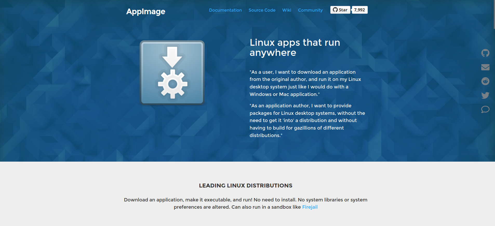

Un programa portable es un programa que tiene todos sus componentes y archivos necesarios en una única carpeta. Realmente muchos programas no portables se pueden usar así, si realizas la instalación en una localizada y la mueves por allí en algo como una unidad USB, por ejemplo, pero no es recomendable: el programa podría estar cogiendo archivos de configuración de otro lugar y al trasladarlo de ordenador se pierdan, aunque puedas mover la carpeta dentro del mismo ordenador sin que nada se rompa.
Tampoco varían los requisitos técnicos de un programa portable; como mucho varían en tamaño.
Así que, ¿cómo consigo un programa portable? Pues es bien sencillo:
| PORTABLE | NO PORTABLE |
|---|---|
|
|
Por desgracia, no hay software portable en ubuntu. Hay una adaptación de algunos programas a modo portable, pero corren a cuenta de la comunidad y no funcionan correctamente, además de ser demasiado costosos de instalar, por lo que los desaconsejo altamente ya que después de una mucho más extensa instalación nada asegura que vayan a funcionar. En mi caso no conseguí hacerlos funcionar de ninguna manera, lo que parece ser algo común.
Este nuevo método comunitario de software portable se llama AppImage, y en principio es tan simple como descargar un archivo .appimage, darle permisos de ejecución y ejecutarlo como un programa desde la terminal (ejectuar chmod a+x nombreprograma.appimage seguido de ./nombreprograma.appimage). Y digo debería porque, como digo, es muy frecuente que no lo haga.
Voy a dejar el enlace a su página web y un enlace a una colección de programas AppImage para quien quiera probar suerte, yo no la tuve y por eso no puedo continuar con una guía más detallada. Antes de cerrar quiero recalcar que no existe el soporte oficial por los desorrallores de los sistemas operativos a AppImage, aunque los desarrolladores de ciertos programas sí que han adaptado personalmente su software.